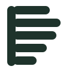
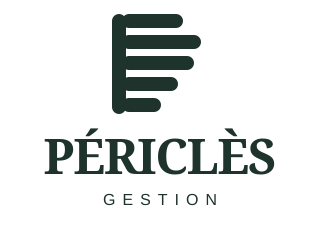
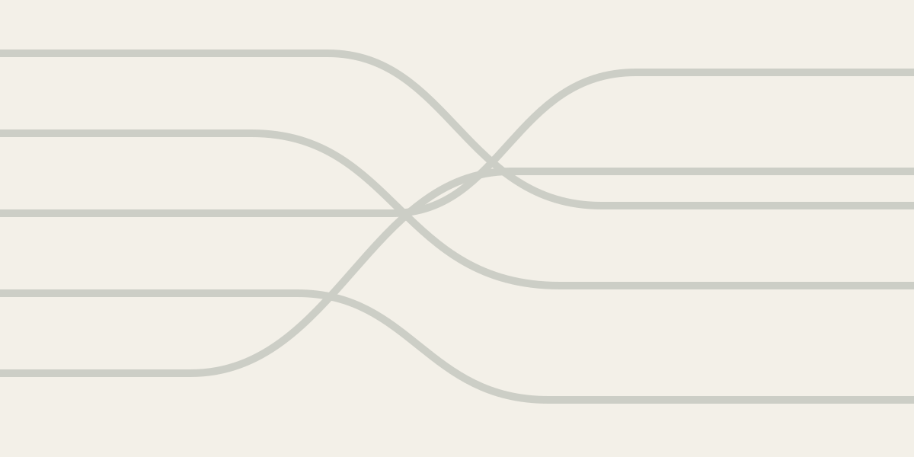
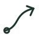

Tenir l'ensemble,
depuis un seul point.
La colonne de pilotage
et les cinq tracés
Une colonne verticale porte la responsabilité unique. Cinq tracés autonomes incarnent les cinq domaines de gestion.
Les lignes restent distinctes : Périclès ne gomme pas les spécificités. Elles partagent cependant le même point de départ, la même structure et la même continuité.
Plusieurs fonctions.
Une responsabilité.

01 Responsabilité
02 Exécution
03 Ensemble
04 Pilotage
05 Continuité
La colonne et les cinq tracés forment un signe stable, reconnaissable et volontairement non littéral.
La serif exprime le discernement et la stature. Le descripteur sans-serif apporte précision et fonctionnalité.
Le symbole peut être perçu comme un P, une structure de dossiers, un faisceau organisé ou une colonne de pilotage.
colonne de responsabilité
tracés pour cinq domaines
combinaisons dans le système

La zone de protection minimale correspond à la largeur de la colonne du symbole, notée X. Aucun texte ou bord ne doit pénétrer cet espace.
Utiliser la version horizontale par défaut. Réserver le symbole aux espaces contraints, favicons, avatars et repères de navigation.
Conserver les proportions et les contrastes officiels.
Ne pas condenser, incliner ou réorganiser les tracés.
Ne pas utiliser de dégradé, d’ombre ou de contour décoratif.
Calcaire et blanc pour l’espace, la clarté et les documents.
Forêt pour l’autorité, les titres et les grands aplats.
Bronze, pierre et sauge pour les repères et distinctions.
ABCDEFGHIJKLMNOPQRSTUVWXYZ
abcdefghijklmnopqrstuvwxyz
0123456789 · ÀÉÈÇŒ
Une information claire, structurée et directement exploitable.
ABCDEFGHIJKLMNOPQRSTUVWXYZ
abcdefghijklmnopqrstuvwxyz
0123456789 · ÀÉÈÇŒ
Newsreader SemiBold
Interligne 90–100 %
Instrument Sans Regular
Interligne 135–150 %
Instrument Sans SemiBold
Capitales espacées

Toujours cinq lignes, reliées par leur rythme ou leur origine.
Le parcours peut changer selon le support, jamais le nombre de tracés.
Fonds, transitions, schémas, couvertures et animation.
Finance & administration
Paie, social & conformité
Prestations & programmes
Systèmes & outils

05Pilotage & développement
Tracé monoline, extrémités arrondies, géométrie simple et même épaisseur de trait.
Les pictogrammes servent à orienter. Ils ne remplacent jamais un intitulé de domaine.
Les supports alternent entre une expression institutionnelle très sobre et des moments où les cinq tracés rendent visible la coordination. L’identité ne doit jamais devenir décorative au détriment de l’information.
Privilégier des prises de parole courtes : principe, constat, méthode ou repère. Une idée par publication.
Les lignes se déploient depuis la colonne, se croisent ou se consolident. Animation lente, continue et sans effet élastique.
Architecture de systèmes, gestes de travail, documents, lieux réels et lumière naturelle. Éviter les buildings financiers et les équipes posées.
Les logos et modèles sont livrés en SVG, adaptés au web et à l’impression. Les exports PNG servent aux usages bureautiques et aux réseaux sociaux.
Périclès Gestion
Tenir l’ensemble.
Concept et système d’identité par Nect’Art — Brand Systems Studio.